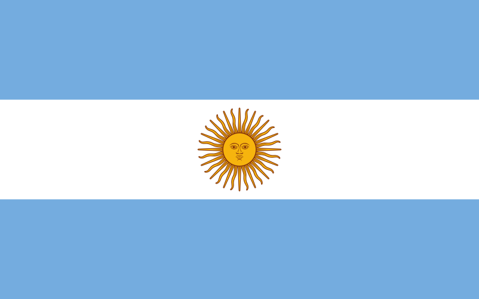

1. 리오넬 메시 (Lionel Messi)
1987-06-24 (35세)
 아르헨티나
170cm / 72kg
 2004 ~ 2021
2004 ~ 2021
No.10
윙어
GOAT (The Greatest Of All Time)
축구 역사상 최다 공격 포인트 기록자이며, 발롱도르(Balon d'Or), FIFA 올해의 선수, 유러피안 골든 슈 최다 수상자이자 FC 바르셀로나, 아르헨티나 국가대표팀, 라리가 역대 최다 득점자인 역대 최고의 선수이다. 메시는 13살이던 2000년 FC 바르셀로나의 스카우트 제의를 받게되고 바르셀로나의 유소년 팀 '라 마시아'에 입단하게 된다. 유망주 시절부터 나이에 비해 월등히 빠른 월반을 통해 엘리트 코스를 밟았다. 이후 2004년 10월 16일 RCD 에스파뇰과의 경기에서 1군에 공식 데뷔하게 된다. 그 이후 바르셀로나에서 17년 동안 엄청난 기록을 쌓아나갔다. 메시는 2009년 22세의 나이로 첫 발롱도르를 수상한 이후 6개의 발롱도르를 추가해 7개로 역대 최다 수상자로 기록되어있다. 그리고 2009년 바르셀로나는 라리가, 코파 델 레이, UEFA 챔피언스 리그를 모두 우승하는 트레블을 기록했고, 더 나아가 축구 역사상 최초의 6관왕이라는 대기록을 달성했다. 이 시즌 UEFA 챔피언스 리그에서 메시는 12경기 9골로 득점왕에 올랐다. 2011-12 시즌에는 73골 29어시스트라는 엄청난 공격 포인트를 기록하여 유럽 역사상 최초로 한 시즌에 공격 포인트 100개 이상을 기록하였고, 라리가 역사상 처음으로 시즌 50골을 기록하였다. 그리고 게르트 뮐러가 세운 한 해 최다 골 기록인 85골을 뛰어넘어 2012년 한 해 동안 무려 91골을 터트리며 세계 신기록을 달성하였다. 2022년에는 월드컵 우승이라는 커리어의 마지막 퍼즐까지 맞추게 되었다. 이로써 메시는 선수로서 참가할 수 있는 모든 대회에서 우승했다.
바르셀로나 소속 우승 기록
| La Liga | 10회 |
| 코파 델 레이 | 7회 |
| 스페인 슈퍼컵 | 8회 |
| FIFA 클럽 월드컵 | 3회 |
| UEFA 챔피언스 리그 | 4회 |
| UEFA 슈퍼컵 | 3회 |
바르셀로나 소속 기록
| 통산 출전 경기 | 골 | 어시스트 |
| 778경기 | 672골 | 305도움 |
2. 호나우지뉴 (Ronaldinho)

1980-03-21 (43세)
 브라질
브라질
181cm / 76kg
 2003 ~ 2008
2003 ~ 2008
No.10
윙어
외계인
축구 역사상 최다 공격 포인트 기록자이며, 발롱도르(Balon d'Or), FIFA 올해의 선수, 유러피안 골든 슈 최다 수상자이자 FC 바르셀로나, 아르헨티나 국가대표팀, 라리가 역대 최다 득점자인 역대 최고의 선수이다. 메시는 13살이던 2000년 FC 바르셀로나의 스카우트 제의를 받게되고 바르셀로나의 유소년 팀 '라 마시아'에 입단하게 된다. 유망주 시절부터 나이에 비해 월등히 빠른 월반을 통해 엘리트 코스를 밟았다. 이후 2004년 10월 16일 RCD 에스파뇰과의 경기에서 1군에 공식 데뷔하게 된다. 그 이후 바르셀로나에서 17년 동안 엄청난 기록을 쌓아나갔다. 메시는 2009년 22세의 나이로 첫 발롱도르를 수상한 이후 6개의 발롱도르를 추가해 7개로 역대 최다 수상자로 기록되어있다. 그리고 2009년 바르셀로나는 라리가, 코파 델 레이, UEFA 챔피언스 리그를 모두 우승하는 트레블을 기록했고, 더 나아가 축구 역사상 최초의 6관왕이라는 대기록을 달성했다. 이 시즌 UEFA 챔피언스 리그에서 메시는 12경기 9골로 득점왕에 올랐다. 2011-12 시즌에는 73골 29어시스트라는 엄청난 공격 포인트를 기록하여 유럽 역사상 최초로 한 시즌에 공격 포인트 100개 이상을 기록하였고, 라리가 역사상 처음으로 시즌 50골을 기록하였다. 그리고 게르트 뮐러가 세운 한 해 최다 골 기록인 85골을 뛰어넘어 2012년 한 해 동안 무려 91골을 터트리며 세계 신기록을 달성하였다. 2022년에는 월드컵 우승이라는 커리어의 마지막 퍼즐까지 맞추게 되었다. 이로써 메시는 선수로서 참가할 수 있는 모든 대회에서 우승했다.
바르셀로나 소속 우승 기록
| La Liga | 2회 |
| 스페인 슈퍼컵 | 2회 |
| UEFA 챔피언스 리그 | 1회 |
바르셀로나 소속 기록
| 통산 출전 경기 | 골 | 어시스트 |
| 207경기 | 94골 | 70도움 |